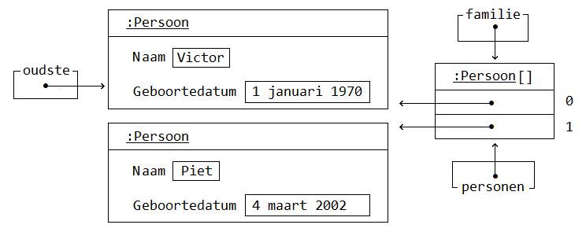
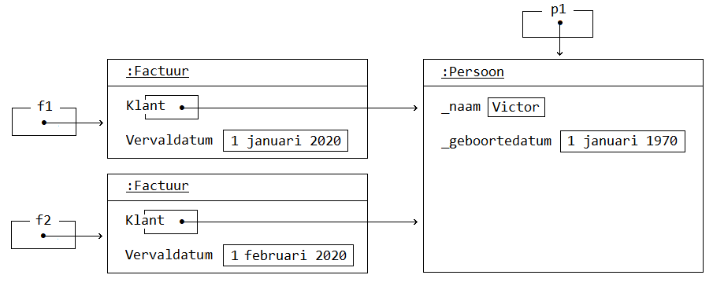

Programmeren Basis - Deel 15¶
1. Constructoren¶
Om meteen bij het aanmaken van een object al wat informatie mee te geven, kan je gebruik maken van een constructor.
De constructor kan de datavelden initialiseren en zo het nieuwe object meteen in een zinvolle toestand brengen.
De situatie tot dusver¶
Voorheen hebben we eerst een object aangemaakt (new), om daarna met de nodige setters (Set methods) informatie in het object te injecteren, bijvoorbeeld…
DateTime geboortedatum = new DateTime(2000, 1, 1);
Persoon p1 = new Persoon(); // (1)
p1.SetNaam("Jan"); // (2)
p1.SetGeboortedatum(geboortedatum); // (2)
Persoon p2 = new Persoon();
-
Eerst maken we het object aan.
-
Daarna stellen we informatie in.
Pas op het moment dat een object een betekenisvolle toestand heeft, kan het ook zinvol gedrag vertonen. Bijvoorbeeld antwoorden op vragen die we het stellen…
-
Levert een zinvol antwoord, bijvoorbeeld 21 (in het jaar 2021).
-
Levert geen zinvol antwoord, bijvoorbeeld 2020 (in het jaar 2021).
p2.Leeftijd() levert geen zinvol antwoord omdat p2 object weliswaar is aangemaakt maar nog zinvolle data bevat.
Voor de volledigheid, nog eens de code van de Persoon klasse…
Persoon.cs
using System;
class Persoon {
private string _naam;
public string GetNaam() {
return _naam;
}
public void SetNaam(string naam) {
_naam = naam;
}
private DateTime _geboortedatum;
public DateTime GetGeboortedatum() {
return _geboortedatum;
}
public void SetGeboortedatum(DateTime geboortedatum) {
_geboortedatum = geboortedatum;
}
public int Leeftijd() {
int leeftijd = 0;
DateTime dt = GetGeboortedatum().Date.AddYears(1);
while (dt <= DateTime.Today) {
leeftijd++;
dt = dt.AddYears(1);
}
return leeftijd;
}
}
1.1. Eenvoudiger objecten maken via constructoren¶
De typische opeenvolging van 'eerst een object aan te maken en meteen daarna informatie instellen', kan eenvoudiger.
Meestal wil je meteen bij het aanmaken van een object al direct de nodig informatie voorzien. Bijvoorbeeld…
DateTime geboortedatum = new DateTime(2000, 1, 1); // (1)
Persoon p1 = new Persoon("Jan", geboortedatum); // (2)
Console.WriteLine(p1.Leeftijd());
-
Bij het aanmaken van een
DateTime, geven we meteen mee dat het gaat om jaar 2000, maand 1 en dag 1. -
Bij het aanmaken van een
Persoon, geven we meteen de naam en geboortedatum mee.
Voor het DateTime datatype werd zoiets dus reeds mogelijk gemaakt door iemand bij Microsoft. Om hetzelfde te bereiken voor je eigen datatype, moet je een constructor toevoegen aan de klasse van je datatype.
1.2. Constructor definiëren¶
Een constructor is een speciaal soort method om objecten bij constructie te initialiseren.
Een constructor heeft geen teruggeeftype (zelfs niet void!), en moet dezelfde naam hebben als de klasse. Bijvoorbeeld…
Persoon.cs
class Persoon {
public Persoon(string naam, DateTime geboortedatum) { // (1)
_naam = naam; // (2)
_geboortedatum = geboortedatum;
}
private string _naam;
public string GetNaam() {
return _naam;
}
public void SetNaam(string naam) {
_naam = naam;
}
private DateTime _geboortedatum;
public DateTime GetGeboortedatum() {
return _geboortedatum;
}
public void SetGeboortedatum(DateTime geboortedatum) {
_geboortedatum = geboortedatum;
}
public int Leeftijd() {
int leeftijd = 0;
DateTime dt = GetGeboortedatum().Date.AddYears(1);
while (dt <= DateTime.Today) {
leeftijd++;
dt = dt.AddYears(1);
}
return leeftijd;
}
}
-
De constructor verwacht een
string naamen eenDateTime geboortedatum. -
De ontvangen waardes worden aan de gepaste datavelden toegekend.
Het is deze constructor die automatisch wordt aangeroepen bij het aanmaken van een object, bijvoorbeeld bij new Persoon("Jan", geboortedatum)
Merk op dat de constructor datavelden initialiseert. Doorgaans doet de constructor niet veel meer dan de parameters kopiëren naar de datavelden.
Opmerking: Constructor bovenaan in een klasse definiëren
Het is zeker geen technische vereiste, maar typisch zijn de constructoren de eerste methods die je in een klasse ziet staan.
Opmerking: Wanneer gebruiken we een Get of Set prefix?
De Get en Set prefixen worden gebruikt om te benadrukken dat het gaat om het opvragen (getten) of instellen (setten) van een bepaalde eigenschap. De naam en de geboortedatum kan je als een 'eigenschap' van een persoon bekijken.
Vooral indien je zowel voorziet in de mogelijkheid eigenschappen op te vragen als in te stellen, zijn deze prefixen zinvol. Ze benadrukken extra dat het gaat om het getten of setten van een waarde.
Straks werken we voor elke eigenschap met één property. Die de mogelijkheid kan bieden de eigenschap zowel in te stellen als op te vragen. Vanaf dan laten we de Get of Set prefixen vallen. Momenteel maken we er nog even gebruik van.
1.3. Default constructor¶
Een parameterloze constructor wordt wel eens de default constructor genoemd.
Deze default constructor zou er in een klasse als Factuur als volgt kunnen uitzien…
Factuur.cs
class Factuur {
public Factuur() { // (1)
_vervaldatum = DateTime.Today.AddMonth(3);
}
...
private DateTime _vervaldatum;
public DateTime GetVervaldatum() {
return _vervaldatum;
}
}
- De default constructor.
In dit geval gaat deze constructor louter het veld _vervaldatum initialiseren.
De default constructor is public en parameterloos en laat toe om een object te creëren zonder bijkomende informatie mee te (moeten) geven. De code van deze default constructor zal het object in een zinvolle default toestand brengen na constructie.
new laten we volgen door de naam van het datatype en ronde haakjes, zonder dat waardes tussen de haakjes worden opgegeven. Bijvoorbeeld…
- We hoeven geen initiële waardes te voorzien bij het creëren van een
Factuur.
Opmerking
Indien je zelf geen enkele constructor in je klasse definieert, dan zal de compiler automatisch een default constructor toevoegen. Dit gebeurt achter de schermen, we zien dit niet expliciet in de code opduiken.
Deze 'impliciete' default constructor is dus
publicen parameterloos en bevat ook geen specifieke implementatie (het doet niets).De aanwezigheid van een default constructor is best handig in quasi elke klasse die we maken. Zodra je een klasse gaat definiëren, bijvoorbeeld
class Gebouw { … }, kan je die bijgevolg meteen ook (zonder parameterwaardes) instantiëren, bijvoorbeeld:new Gebouw().Belangrijk : indien je zelf een constructor in een klasse definieert (met of zonder parameters), wordt er op de achtergrond geen constructor meer toegevoegd.
1.4. Verplichte initialisatie¶
Persoon.cs
class Persoon {
public Persoon(string naam, DateTime geboortedatum) {
_naam = naam;
_geboortedatum = geboortedatum;
}
private string _naam;
private DateTime _geboortedatum;
...
}
Let op : indien er in een klasse slechts één constructor aanwezig is én die heeft geen parameters, dan kan je geen objecten aanmaken zonder waardes te voorzien. Er is immers geen parameterloze constructor (default constructor) aanwezig, zelfs niet impliciet.
Bijvoorbeeld, in klasse Persoon hierboven hebben we slechts 1 constructor, nl. public Persoon(string naam, DateTime geboortedatum). Je kan dus geen parameterloze constructor gebruiken bij het aanmaken van Persoon objecten.
Probeer je toch nog een object aan te maken van het type Persoon zonder dat je initiële waardes gaat voorzien, dan treedt een compilefout op…
Program.cs
- Compilefout: "There is no argument given that corresponds to the required formal parameter 'naam' of 'Persoon.Persoon(string, DateTime)'"
1.5. Meerdere constructoren¶
Indien je dat voorgaande toch wenst, dan kan je eenvoudigweg een parameterloze constructor aan de klasse Persoon toevoegen…
Persoon.cs
class Persoon {
public Persoon() { // (1)
....
}
public Persoon(string naam, DateTime geboortedatum) { // (2)
...
}
...
}
-
Een parameterloze, …
-
… en niet parameterloze constructor zijn deze keer in de klasse
Persoonvoorzien.
Hierdoor kan de client (deze die gebruik maakt van Persoon) op twee manieren objecten van dat type creëren…
class Program {
static void Main() {
Persoon p1 = new Persoon("Jan", geboortedatum); // (1)
Persoon p2 = new Persoon(); // (2)
...
}
}
-
Handig om meteen naam en geboortedatum te kunnen instellen.
-
Soms heb je pas later de nodig info (naam en geboortedatum), maar wil je wel reeds het object aanmaken.
In dit geval zijn er twee constructoren, maar dat aantal is vrij uit te kiezen.
Opmerking
Als een klasse meerdere constructoren bevat, moeten deze verschillen in de volgorde, het aantal, of de datatypes van de parameters.
Indien dat niet het geval zou zijn, wordt het voor de compiler onmogelijk te bepalen welke constructor er precies moet worden gebruikt (omdat er meerdere keuzes mogelijk zijn).
1.6. Constructoren die elkaar oproepen¶
Als je meerdere constructor wil voorzien, zul je merken dat ze veel gelijklopende code bevatten.
Je kunt deze code duplicatie vermijden (denk aan het DRY-principe) door een bepaalde constructor een andere constructor te laten oproepen. Deze oproep zorgt er dan voor dat die andere constructor alvast een deel van het initialisatie werk doet voor het nieuwe object. Er zullen in dit geval dus 2 constructoren uitgevoerd worden, die elk een stuk van het werk doen.
De manier waarop je dit doet is wel een beetje ongewoon, je moet een : this(…) oproep toevoegen in de hoofding van de constructor.
Bijvoorbeeld, neem een klasse Interval die een interval met een instelbare onder- en een bovengrens voorstelt, bv. een interval van 5 tot 10. Stel dat we meestal beide grenzen willen opgeven maar vaak intervallen gebruiken die beginnen bij 0, bv. een interval van 0 tot 20. We zouden dan 2 constructoren kunnen voorzien : eentje met parameters voor beide grenzen en eentje met enkel een parameter voor de bovengrens. Dat zou er dan zo kunnen uitzien :
class Interval {
public Interval(int min, int max) { // (1)
_min = min;
_max = max;
...
}
public Interval(int max) : this(0, max) { // (2)
...
}
...
}
-
dit is een constructor die twee datavelden invult.
-
deze constructor krijgt geen
mininformatie en roept de andere constructor op met eenminwaarde van0.
Let goed op de ongewone plaats waar die this(0, max) oproep moet terechtkomen!
Hieronder volgt nu een wat realistischer voorbeeld :
Voorbeeld met meerdere constructoren die elkaar oproepen
Objecten van een Counter klasse moeten bijvoorbeeld als teller kunnen dienen.
Met hoeveel een teller in één stap vooruit gaat (Advance()) kan worden afgetoetst met Step(). Dit zou om te beginnen 1 moeten zijn.
Op hoeveel een teller staat kan je opvragen met de Value() query. By default start een teller van 0. Dat is bijvoorbeeld het geval als je een object aanmaakt als volgt…
Counter c1 = new Counter(); // (1)
Console.WriteLine(c1.Value()); // 0
Console.WriteLine(c1.Step()); // 1
c1.Advance();
c1.Advance();
Console.WriteLine(c1.Value()); // 2
- Een teller die als
new Counter()wordt gemaakt vertrekt van waarde 0 en met stapwaarde 1.
We zouden hier alvast één constructor kunnen gebruiken om een dataveld als _stepValue op 1 te zetten.
Counter.cs
class Counter {
public Counter() {
_value = 0; // (1)
_stepValue = 1; // (2)
}
private int _value;
public int Value() {
return _value;
}
private int _stepValue;
public int Step() {
return _stepValue;
}
public void Advance() {
_value += Step();
}
}
-
Hoeft eigenlijk niet, 0 is immers de defaultwaarde van een
int. -
Het dataveld
_stepValuewordt hier in de constructor op 1 gezet.
Dit kon eigenlijk zonder constructor, ook op de declaratieregel van een dataveld kan je immers een waarde aan deze variabele toekennen (private int _stepValue = 1;).
We wensen echter ook meteen bij creatie van een Counter een initiële waarde te kunnen opgeven, en zelf in een mogelijkheid te voorzien een initiële waarde en stapwaarde te kunnen bepalen…
Counter c1 = new Counter(); // (1)
c1.Advance();
Console.WriteLine(c1.Value()); // 1
Counter c2 = new Counter(100); // (2)
c2.Advance();
Console.WriteLine(c2.Value()); // 101
Counter c3 = new Counter(200, 2); // (3)
c3.Advance();
Console.WriteLine(c3.Value()); // 202
-
c1vertrekt met de default waarde 0, en default stapwaarde 1 -
c2vertrekt met de opgegeven waarde 100 , en default stapwaarde 1 -
c3vertrekt met de opgegeven waarde 200 , en opgegeven stapwaarde 2
Extra constructoren zijn hier vereist.
Om onszelf niet te herhalen (DRY) laten we de ene constructor van de andere herbruik maken. Dit kan met een this() call.
Vaak is er één constructor met alle parameters die door de andere constructoren kunnen worden herbruikt.
class Counter {
public Counter(int initialValue, int stepValue) { // (1)
_value = initialValue;
_stepValue = stepValue;
}
public Counter(int initialValue) : this(initialValue, 1) {} // (2)
public Counter() : this(0, 1) {} // (3)
...
}
-
De eerste constructor heeft alle parameters, voor de initiële waarde en stapwaarde.
-
De tweede constructor herbruikt de eerste door de
this(initialValue, 1)call op de signatuurregel. -
Deze derde constructor kan onze oorspronkelijke vervangen, want ook hier kunnen we eigenlijk de eerste hergebruiken, met de call
this(0, 1).
Opmerking: this() call op de hoofding van de method
Om een constructor een andere constructor van dezelfde klasse te laten aanroepen is een
this()call vereist. Je roept de constructor aan na een:die volgt op de parameterlijst. Merk op dat dit een ietswat vreemde plaats is, een plaats waar anders nooit code zou staan.Verwar de
this()call hier niet met de object expressiethisdie we voorheen hadden gebruikt voor een dot (this.member) om te benadrukken dat we een member van de klasse benaderden.
Een alternatief is natuurlijk…
class Counter {
public Counter(int initialValue) {
_initialValue = initialValue;
}
public Counter(int initialValue, int stepValue) : this(initialValue) { // (1)
_stepValue = stepValue;
}
public Counter() : this(0, 1) {}
...
}
- Deze keer gaat de constructor met twee parameters deze met één parameter oproepen.
De eerste constructor, met de ene initialValue parameter, gaat louter de waarde van de teller instellen. De constructor met twee parameters, herbruikt deze voorgaande om de waarde in te stellen, maar gaat zelf nog de stapwaarde instellen.
Ook een elegante oplossing.
In de klasse Counter is enkel de mogelijkheid voorzien bij het aanmaken van een object de waarde en stapwaarde in te stellen.
Na creatie van het object kan de waarde enkel nog veranderen door de teller te laten vooruitgaan: Advance(). Er is verder geen sprake van één of ander SetValue method om de waarde rechtstreeks in te stellen.
Opmerking: Ontwerp
De keuze bepaalde mogelijkheden wel of niet te voorzien is een ontwerpbeslissing. Wat je wil gaan doen met objecten van een bepaald datatype is sturend voor de keuze die je maakt.
Je vertrekt met andere woorden bij het ontwerp van datatypes altijd vanuit de vraagstelling welke interactie je wenst te hebben met objecten van dit type.
1.7. Immutable objecten¶
Indien de toestand van een object (de waardes waarover het beschikt) niet aanpasbaar is, noemen we dit object immutable.
In een immutable datatype is een constructor beschikbaar die ons toestaat bij creatie van objecten de nodige initiële waardes te voorzien. Indien geen setters (Set methods bijvoorbeeld) of overige commando’s beschikbaar zijn om die ingestelde waardes nog verder te manipuleren, is de toestand van deze objecten als het ware bevroren.
Opmerking: Immutable string en DateTime
Datatypes als
stringenDateTimewaar we voorheen reeds aan de slag zijn gegaan, zijn immutable. Zo kan je bijvoorbeeld op geen enkele wijze iets aan de toestand van eenstringobject veranderen. Het zelfde is van toepassing voor waardes van typeDateTime.
Indien je zelf datatype gedeeltelijk of geheel immutable wil maken, ga je typisch:
-
één of meerdere constructoren voorzien om initiële waardes bij creatie van het object te kunnen opgeven
-
allicht alsnog getters (bijvoorbeeld query methods) voorzien om de nodige informatie bevraagbaar te maken
-
datavelden die deel uitmaken van de te bevriezen toestand als
readonlymarkeren
1.7.1. Readonly datavelden¶
Aan readonly datavelden, bijvoorbeeld private readonly string _afkorting, kan je enkel op de declaratieregel of in de constructor een waarde toekennen.
readonly biedt je dus een soort extra beschermingslaag. Ga je toch, per ongeluk, elders een waarde aan zo’n dataveld toekennen dan bekomen we de compilefout "A readonly field cannot be assigned to (except in a constructor of the class in which the field is defined or a variable initializer)".
Voorbeeld van een immutable datatype
In het geval van EU valuta bijvoorbeeld, ligt de afkorting en Euro conversie factor voor elke valuta vast. Er is geen nood aan mogelijkheid deze nog achteraf te kunnen wijzigen.
EuValuta.cs
class EuValuta {
public EuValuta(string afkorting, decimal euroConversieFactor) { // (2)
_afkorting = afkorting;
_euroConversieFactor = euroConversieFactor;
}
private readonly string _afkorting; // (1)
public string Afkorting() {
return _afkorting;
}
private readonly decimal _euroConversieFactor; // (1)
public decimal ToEuroConversieFactor() {
return _euroConversieFactor;
}
public decimal ToEuro(decimal waarde) {
return waarde * EuroConversieFactor();
}
}
-
Merk op dat de datavelden extra bescherming genieten dankzij het
readonlysleutelwoord. -
Enkel in de constructor (of op de declaratieregels) zouden we er een waarde aan kunnen toekennen.
Naast de constructor zijn er geen andere mogelijkheden om van een EuValuta object de afkorting of Euro conversie factor in te stellen.
Program.cs
class Program {
static void Main() {
EuValuta nederlandseGulden = new EuValuta("NLG", 2.20371m);
Console.WriteLine(nederlandseGulden.ToEuro(100)); // 220.371
EuValuta duitseMark = new EuValuta("DEM", 1.95583m);
Console.WriteLine(duitseMark.ToEuro(200)); // 391.166
}
}
Het gebruik van readonly datavelden is geen verplichting. Maar kan helpen fouten te vermijden.
2. Visibility¶
Elke member die we tot dusver hebben gedefinieerd is ofwel public, ofwel private. Deze sleutelwoorden wijzen op de zichtbaarheid (Engels: visibility) van dit onderdeel van de klasse, ter herhaling:
-
publicmembers zijn overal benaderbaar waar men met deze klasse (of objecten van deze klasse) kan werken -
privatemembers zijn enkel binnen de klasse benaderbaar
Datavelden hebben we steeds private gemarkeerd, methods doorgaans public. Niet toevallig zijn dat ook de defaults voor deze members.
Opmerking: Default visibility
Indien je vergeet bij een dataveld de visibility te melden, zal dit veld
privatezijn.Zou je bij een method vergeten de visibility te bepalen, dan is deze
public.Voor de leesbaarheid van je code is natuurlijk aan te raden steeds expliciet de visibility te vermelden. Ook underscores (die we gebruiken om de namen van datavelden mee te starten) helpen natuurlijk in de code duidelijk te maken dat het gaat om beperkt zichtbare (
private) members.
Keuze vanuit de interactie¶
De keuze voor public of private is een ontwerpbeslissing, en is helemaal niet moeilijk te maken!
Denk eenvoudigweg steeds vanuit de interactie die je wenst te hebben met objecten van je te ontwerpen datatype.
Denk met andere woorden na over welke public members dat datatype moet beschikken. De verzameling van deze publieke members noemt men ook wel eens de interface van dat datatype.
Per member uit die interface reflecteer je over de verantwoordelijkheid die ze vervult, en denk je alvast na over de naam, parameters en eventueel het return type (in het geval van een query).
Voorbeeld
Misschien wil je een programma bouwen voor een bedrijf dat cilindervormige regenwaterputten verkoopt.
Bij het opstellen van hun catalogus kent de verkoper op zijn minst voor elke waterput de diameter en hoogte. Die informatie, bijvoorbeeld 2 en 1,35 meter voert hij in bij het toevoegen van waterputten.
Als het programma de details van een waterput wil tonen, wenst het echter verder te gaan. Ook de oppervlakte en inhoud van deze waterputten worden hier weergeven.
DETAILS WATERPUT:
Diameter: 1,35
Hoogte: 2
Oppervlakte: 1,4313881527918497
Inhoud: 2,8627763055836994
Indien we in ons programma zouden beschikken over objecten die een regenwaterput voorstellen, kunnen we aan zo’n object misschien wel makkelijk dergelijke informatie kunnen opvragen…
Console.WriteLine($" Diameter: {waterput.GetDiameter()}");
Console.WriteLine($" Hoogte: {waterput.GetHoogte()}");
Console.WriteLine($" Oppervlakte: {waterput.Oppervlakte()}");
Console.WriteLine($" Inhoud: {waterput.Inhoud()}");
Dit dus in de veronderstelling dat waterput een object is van het type Regenwaterput.
En in de veronderstelling dat een Regenwaterput object voldoende weet om op al die vragen (queries) te kunnen antwoorden. Indien het zijn diameter en hoogte kent, zou dat moeten lukken.
Het stukje programma dat verantwoordelijk is voor het opvullen van de catalogus, of dus registreren van de waterputten, zou dan objecten kunnen aanmaken van het type Regenwaterput.
De gebruiker van het programma voert de diameter en hoogte in.
Op basis van die informatie kan het programma een object construeren…
Console.Write(" Diameter?: ");
double diameter = double.Parse(Console.ReadLine());
Console.Write(" Hoogte?: ");
double hoogte = double.Parse(Console.ReadLine());
Regenwaterput waterput = new Regenwaterput(diameter, hoogte);
Heel wat is alvast duidelijk. In de interface (verzameling van publieke members) van Regenwaterput zit op zijn minst:
-
een constructor die diameter en hoogte aanneemt:
Regenwaterput(double hoogte, double diameter) -
een query als:
double GetHoogte() -
een query als:
double GetDiameter() -
een query als:
double Oppervlakte() -
een query als:
double Inhoud()
Al deze members zijn public, want hierin is de programmacode geïntereseerd! Aan de hand van deze members wenst de programmacode te communiceren met zijn waterputten.
Alle overige members, denk aan datavelden als _diameter of _hoogte maak je private. Implementatiedetails, als de manier waarop een Regenwaterput object zijn informatie intern bijhoudt (bijvoorbeeld of hij dat doet met twee, drie, vier, … velden), interesseert de programmacode helemaal niet. Om die reden worden ze ook verborgen.
Op basis van overige gewenste interactie kan je nog overwegen de interface aan te vullen met:
-
een commando als:
void SetDiameter(double diameter) -
een commando als:
void SetHoogte(double hoogte)
Voor de oppervlakte en inhoud ga je allicht geen Set methods voorzien, die informatie is immers afgeleid van de diameter en hoogte.
Information hiding of encapsulation¶
We spraken hier vooral over private en public als uit te kiezen visibility (Nederlands: zichtbaarheid) voor een bepaalde member.
Het onzichtbaar, of dus private maken van members wordt ook wel eens information hiding genoemd. Of zelfs een vorm van encapsulation (Nederlands: inkapseling).
Opmerking
Encapsulation is een basispijler van object orientatie, en is trouwens breder dan information hiding. Men bedoelt ermee ook het concept van bundeling van data (toestand) en methods (gedrag).
3. Properties¶
Om op eenvoudige wijze eigenschappen van objecten te laten instellen of opvragen, maken we gebruik van properties.
Zaken als de naam of de geboortedatum van een persoon kan je als een eigenschap (noem het kenmerk of attribuut) van deze persoon beschouwen.
Je geeft met een get en/of set gedeelte aan of de eigenschap zowel opvraagbaar (gettable) en/of instelbaar (settable) is. Bijvoorbeeld…
Persoon.cs
Opmerking
Net als methods starten de namen van properties met een hoofdletter.
Om de naam van een persoon in te stellen, zou je de Naam property kunnen gelijkstellen aan de nieuwe naam.
Persoon persoon = new Persoon();
persoon.Naam = "Jan"; // (1)
string winnaar = persoon.Naam; // (2)
Console.Write(winnaar); // Jan
-
Met een klassieke toekenningsregel kunnen we een waarde toekennen aan de
Naameigenschap. -
Merk op hoe we aan de hand van dezelfde
Naammember deze eigenschap ook kunnen uitlezen.
Opmerking: Ronde haakjes enkel voor methods
Merk op hoe bij het gebruik van properties nooit ronde haakjes volgen op de property-naam.
Bij het aanroepen van een method is er wel steeds sprake van ronde haakjes, zelfs indien er geen parameterwaardes zijn.
3.1. Properties instellen in de object initializer¶
Tijdens het aanmaken van objecten (aan de hand van een object initializer) kan je meteen ook initiële waardes toekennen aan de (instelbare) eigenschappen van dergelijk object.
Je doet dit door in de object initializer (bijvoorbeeld New Persoon) na de naam van het datatype tussen accolades, na een . de naam van de property te vermelden waaraan je waarde wenst toe te kennen, bijvoorbeeld…
Persoon persoon1;
persoon1 = new Persoon(); // (1)
persoon.Naam = "Jan"; // (2)
persoon.Postcode = "9000"; // (2)
Persoon persoon2;
persoon2 = new Persoon() { Naam = "Piet", Postcode = "8000" }; // (3)
Persoon persoon3;
persoon3 = new Persoon { Naam = "Joris", Postcode = "2000" }; // (4)
-
In plaats van na het aanmaken van een object van type
Persoon… -
…elke in-te-stellen eigenschap op een aparte instructieregel zijn waarde toe te kennen…
-
…kan je met dergelijke uitgebreide object initializer deze verschillende stappen samen ondernemen, of dus in één regel coderen.
-
De ronde haakjes na de naam van het type mogen bij een uitgebreide object initializer worden weggelaten. Dus bijvoorbeeld iets als
new Persoon { … }in plaats vannew Persoon(…) { … }, indien de constructor geen parameterwaardes verwacht.
Hier natuurlijk in de veronderstelling dat we in klasse Persoon naast de instelbare (settable) property Naam, ook beschikken over een instelbare property Postcode…
3.2. Vereenvoudiging ten opzichte van methods¶
Vereenvoudiging voor de klasse
De hiervoor gedefinieerde property public string Naam { get; set; } correspondeert met een combinatie van:
-
een
Getmethod voor het opvraagbaar maken van de naam eigenschap -
een
Setmethod voor het instelbaar maken van de naam eigenschap -
een achterliggend dataveld voor het bewaren van de eigenschapswaarde
Het gebruik van een property maakt de code dus een stuk compacter, één member per eigenschap volstaat.
Het maakt de code ook declaratiever. In declaratieve code ligt je focus op het wat, zoals met properties:
En niet op het hoe, zoals met methods:
class Persoon {
private string _naam;
public string GetNaam() {
return _naam;
}
public void SetNaam(string naam) {
_naam = naam
}
}
De combinatie van de methods en het dataveld vertelt hoe de eigenschap functioneert. Het dataveld verduidelijkt hoe de waarde wordt onthouden. De Get en Set methods hoe het opvragen of instellen dan onderliggend verloopt.
De property maakt met één eenvoudige regel code duidelijk welke eigenschap wordt voorzien. Ook de get en set sleutelwoorden verduidelijken wat met die eigenschap kan gebeuren (opvragen en instellen).
Vereenvoudiging voor de client
Zeker het instellen van de eigenschap gebeurt op een heel andere wijze bij het gebruik van properties. Je kan een eenvoudige toekenningsregel opstellen: eenObject.Eigenschap = eenWaarde, geen gedoe meer met parameters: eenObject.SetEigenschap(eenWaarde).
Het opvragen van de eigenschap gebeurt min of meer identiek, al hoef je hier bij het gebruik van properties geen aparte member voor in te zetten.
Met methods:
Persoon persoon = new Persoon();
persoon.SetNaam("Jan"); // (1)
string winnaar = persoon.GetNaam(); // (2)
Console.Write(winnaar); // Jan`
"Jan"moest als parameterwaarde worden meegegeven aan deSetNaammethod- Het aparte method, specifiek voor het getten van de eigenschap, hier
GetNaam(), wordt gebruikt voor het uitlezen van de eigenschap.
Met properties:
Persoon persoon = new Persoon();
persoon.Naam = "Jan"; // (1)
string winnaar = persoon.Naam; // (2)
Console.Write(winnaar); // Jan`
- Met een klassieke toekenningsregel kunnen we een waarde toekennen aan de
Naameigenschap. - Merk op hoe we aan de hand van dezelfde
Naammember deze eigenschap ook kunnen uitlezen.
3.3. Waarvoor kiezen we nu (methods of properties)?¶
We gieten het nog eens in een schematisch overzicht…

Properties dienen net als methods voor het implementeren van gedrag. Het set gedeelte van een property correspondeert met het commando aspect van de eigenschap, het get gedeelte met het query aspect.
Er zijn een aantal voordelen aan het werken met properties:
-
de klasse hoeft maar één member per eigenschap te definiëren, die ene member zorgt zowel voor de opslag, het getten als het setten
-
de client kan met een eenvoudige toekenning een eigenschap instellen
We maken daarom gebruik van properties daar waar mogelijk.
De manier waarop we hier properties uitgeschreven staat niet toe dat we code laten uitvoeren bij het opvragen of instellen van een eigenschap. Indien je met methods aan de slag gaat, is dat uiteraard wel het geval. Indien de leeftijd van een persoon wordt afgeleid van (lees: berekend op basis van) zijn geboortedatum, moet er dus code worden uitgevoerd. Aan de hand van een method Leeftijd() kunnen we de eigenschap leeftijd opvraagbaar maken.
class Persoon {
...
public DateTime Geboortedatum { get; set; }
public int Leeftijd() {
int leeftijd = 0;
DateTime dt = Geboortedatum.Date.AddYears(1);
while (dt <= DateTime.Today) {
leeftijd++;
dt = dt.AddYears(1);
}
return leeftijd;
}
}
Technisch gezien zijn er nog wel een aantal verschillen tussen properties en methods. Denk bijvoorbeeld aan het gebruik van parameters, dit kan enkel indien je werkt met methods. Geen probleem echter, bij het benaderen van eigenschappen heb je zelden nood aan parameters.
3.4. Properties in voorgedefinieerde datatypes¶
Het gebruik van properties is helemaal niet nieuw voor ons.
Zo zijn Length, ForegroundColor, Now of Year in volgende code uiteraard ook properties…
Console.ForegroundColor = ConsoleColor.Green;
DateTime vandaag = DateTime.Today;
Console.WriteLine(vandaag.Year);
string vandaagAlsTekst = vandaag.ToString();
Console.WriteLine(vandaagAlsTekst.Length);
Je herkent dat het om een property gaat, door het gebrek aan ronde haakjes.
Opmerking: Instance vs static properties
YearenLengthworden aangeroepen op een object, en zijn bijgevolg (object gerelateerde) instance properties.
ForegroundColorenTodayworden aangeroepen op een klasse-naam, deze zijn (klasse gerelateerde)staticproperties.
3.5. Enkel uitleesbare properties¶
De visibility van een property is zowel van toepassing op het get als set gedeelte. Een property als…
Is zowel publiek opvraagbaar (public get), als publiek instelbaar (public set).
Indien een eigenschap enkel uitleesbaar moet zijn, heb je een aantal mogelijkheden:
-
Je overschrijft de
publicvisibility van de property, specifiek voor hetsetgedeelte metprivatevisibility, bijvoorbeeld…Hierdoor kan je enkel nog binnen de klasse zelf een waarde toekennen aan deze property. Dit kan in de constructor zijn, of in de implementatie van een andere member.
-
Je laat het
setgedeelte vallen, bijvoorbeeld…Enkel in de constructor kan je nog een waarde toekennen aan deze property.
-
Je werkt met een
initin plaats vanset, bijvoorbeeld…Hierdoor is de property instelbaar in de implemenatie van de constructor, en publiek settable op het moment dat je het object aanmaakt, bijvoorbeeld…
Persoon persoon1 = new Persoon { Naam = "Jan" }; // (1)
persoon1.Naam = "Piet"; // kan niet meer => compilefout
-
Aan de hand van uitgebreide object initializer kan je de
Naamproperty een (initiële) waarde geven. -
Naderhand is het niet meer mogelijk de
Naamnog te veranderen. Er is immers geen publieke setter (public set) aanwezig.
Het laten instellen van initiële waardes voor properties had niet mogelijk geweest bij wijze van properties zonder set of properties met een private set.
Voorbeeld van enkel uitleesbare eigenschappen
Value property met private set:
In onze klasse Counter hadden we voorheen de waarde van de teller enkel opvraagbaar gemaakt door enkel een Value() query te voorzien. Deze method ging de waarde uit het dataveld _value ophalen.
In de constructor en in de Advance() method wordt dat veld aangepast. Dat is beide binnen de klasse zelf. Ter vervanging van beide (Value() en _value) zetten we deze keer een Value property in met een private set gedeelte. De private setter stelt ons nog perfect in staat binnen de klasse zelf (bijvoorbeeld in de constructor en de Advance() method) een waarde aan deze property toe te kennen.
Step property zonder set:
Voorheen hadden we een Step() method en een _stepValue dataveld die enkel in de constructor werd ingesteld. Ter vervanging hiervan volstaat een Step property zonder set gedeelte.
Met methods:
class Counter {
public Counter() {
_value = 0;
_stepValue = 1;
}
private int _value;
public int Value() {
return _value;
}
private int _stepValue;
public int Step() {
return _stepValue;
}
public void Advance() {
_value += Step();
}
}
class Counter {
public Counter() {
Value = 0;
Step = 1;
}
public int Value { get; private set; }
public int Step { get; }
public void Advance() {
Value += Step;
}
}
Je merkt hoe je aan de hand van properties toch een stuk compacter kan coderen.
3.6. Werken we nog met Get en Set prefixen?¶
Niet voor properties…
Merk op dat we natuurlijk voor de property Naam van onze Persoon klasse niet meer gaan werken met een Get of Set prefix, dat zou verwarrend zijn. De property wordt immers zowel gebruikt voor het opvragen (getten), als voor het instellen (setten) van de eigenschap.
Voor methods…
Soms kies je voor het inzetten van een method, bijvoorbeeld omdat de op te leveren waarde wordt berekend, en niet zomaar wordt opgehaald uit een dataveld, bijvoorbeeld Leeftijd(). In dat geval mag je met een Get prefix benadrukken dat het om het opvragen van een waarde gaat, bijvoorbeeld GetLeeftijd(), maar dat hoeft eigenlijk niet. Dat de method in dat geval een return type heeft, maakt dat immers reeds duidelijk.
4. Verwijzingen en samengestelde objecten¶
4.1. Reference types¶
Om met objecten van een bepaald klasse datatype te werken, verwijzen we in een opslagplaats (variabele, slot van een array, …) naar deze instantie. Deze verwijzing wordt ook wel een referentie genoemd.
Zoals we eerder reeds aangaven zijn datatypes gedefinieerd aan de hand van een class dan ook de zogenaamde reference types.
Opmerking: Waarom werken met verwijzingen?
De bestaansreden voor reference types is, dat we in grotere programma’s waarden willen doorspelen van het ene stuk van een programma naar een ander stuk.
Stel bijvoorbeeld dat we een programma hebben met een grafische user interface, waarin de gebruiker persoonsgegevens kan intypen die na een druk op de save knop in een databank moeten bewaard worden.
Dan zal het programmastuk dat uitgevoerd wordt na een druk op de knop, de data (alle persoonsgegevens) moeten doorspelen aan het programmastuk die met de databank communiceert.
Om te vermijden dat we al de verschillende databrokjes (naam, woonplaats, geboortedatum, enzovoort) apart moet kopiëren, zullen we ze groeperen in een object, en gewoon de verwijzing naar dit object doorgeven van het ene programmastuk naar het andere.
Je kan tijdens uitvoer van het programma beschikken over meerdere verwijzing naar hetzelfde object. Elke verwijzing heeft zijn eigen rol voor het stukje code in kwestie.
Voorbeeld van meerdere verwijzingen naar hetzelfde object
Zo wordt zowel in het eerste slot van de array familie( of personen), als in de variabelen oudste naar Victor verwezen…
Program.cs
class Program {
static void Main() {
DateTime geboorteDatum1 = new DateTime(1970, 1, 1);
DateTime geboorteDatum2 = new DateTime(2002, 3, 4);
Persoon[] familie = new Persoon[2];
familie[0] = new Persoon("Victor", geboorteDatum1);
familie[1] = new Persoon("Piet", geboorteDatum2);
Persoon oudste = Oudste(familie);
Console.WriteLine($"De oudste persoon is: {oudste.Naam}");
}
static Persoon Oudste(Persoon[] personen) {
Persoon oudste = personen[0];
for (int i = 1; i < personen.Length; i++) {
if (personen[i].Geboortedatum > oudste.Geboortedatum) {
oudste = personen[i];
}
}
return oudste;
}
}

Bovenstaande objecten worden aangemaakt in de Main() method van onderstaande code.
De twee slots van een array familie wijzen beide naar een object van type Persoon. Method Oudste() zoek uit welk Persoon object daarvan als oudste kan bestempeld worden.
Persoon.cs
class Persoon {
public Persoon(string naam, DateTime geboortedatum) {
this.Naam = naam;
this.Geboortedatum = geboortedatum;
}
public string Naam { get; }
public DateTime Geboortedatum { get; }
}
Opmerking: this
In de constructor van de klasse
Persoonwordt hier trouwens met de object expressiethisgewerkt.Strikt noodzakelijk was dat niet. Het verduidelijkt echter dat we aan de properties waardes toekennen. Iets als
this.Geboortedatum = geboortedatumis immers op dat vlak explicieter danGeboortedatum = geboortedatum.Zeker indien het verschil enkel zit in het hoofdlettergebruik (property start met een hoofdletter, parameter start met een kleine letter), helpt
thisduidelijkheid te scheppen.
4.2. Samengestelde objecten¶
Meerdere objecten van verschillende (of hetzelfde) datatype(s) kunnen ook naar elkaar verwijzen.
Ook hier kan je stellen dat het voordeel is dat er geen overtollige data wordt bijgehouden.
Voorbeeld van samengestelde objecten
Victor kan zo bijvoorbeeld zowel de klant zijn gekoppeld aan de eerste Factuur f1, als aan de tweede Factuur f2.
Program.cs
class Program {
static void Main() {
Persoon p1 = new Persoon("Victor", new DateTime(1970, 1, 1));
Factuur f1 = new Factuur(p1, new DateTime(2020, 1, 1));
Factuur f2 = new Factuur(p1, new DateTime(2020, 2, 1));
}
}
In plaats van de informatie voor Victor meermaals bij te houden, kan elke Factuur die aan hem gekoppeld is, naar hem verwijzen.

Elke object van het type Factuur kan hiervoor een verwijzing bijhouden naar een object van het type Persoon.
Factuur.cs
class Factuur {
public Factuur(Persoon klant, DateTime vervaldatum) {
this.Klant = klant;
this.Vervaldatum = vervaldatum;
}
public Persoon Klant { get; set; } // (1)
public DateTime Vervaldatum { get; set; }
}
- Merk op dat het datatype van de
Klantproperty,Persoonis.
Opmerking: Program.cs
Een soort van doorgedreven dot notatie kan je inzetten om informatie uit dergelijk samengestelde objecten op te halen…
Persoon p1 = new Persoon("Victor", new DateTime(1970, 1, 1)); Factuur f1 = new Factuur(p1, new DateTime(2020, 1, 1)); Console.Write($"De lengte van de naam van de klant van f1: {f1.Klant.Naam.Length}"); // 6 (1)
- De
Lengthproperty van eenstringwordt uitgelezen. Dezestringwerd opgeleverd door deNaamproperty van eenPersoonexpressie (f1.Klant). DeKlantproperty levert immers eenPersoonwaarde op.Het kan helpen iets als
f1.Klant.Naam.Lengthvan rechts naar links te lezen. DeLengthvan deNaamvan deKlantvanf1is Victor.
5. Expressies en static typing¶
Stukken code gaan in hoofdzaak waardes manipuleren, en die waardes doorgeven aan ander stukken code. Hoe je (grammaticaal gezien) waardes kan manipuleren, is afhankelijk van het soort van waardes (datatype) waarmee je werkt.
Om correcte (voor de compiler begrijpbare) code op te stellen, is het van belang dat je de grammaticale opbouw van code kan ontleden. Meer specifiek moet je kunnen herkennen wat expressies zijn. Het datatype van deze expressies zal immers bepalen wat voor bewerkingen je kan gaan uitvoeren.
5.1. Statisch getypeerde programmeertaal¶
Voorbeeld
Kijk eens naar onderstaande code, en ga van de genummerde regels na of deze code zal compileren. Anders gezegd, zal de compiler de genummerde regels begrijpen?
using System;
class Persoon
{
public bool Vip { get; set; }
public string Naam { get; set; }
public Adres Adres { get; set; }
}
class Adres
{
public string Straat { get; set; }
public int Nummer { get; set; }
public string Gemeente { get; set; }
}
class Program
{
static void Main()
{
Persoon persoon = new Persoon();
persoon.Straat = "Voskenslaan"; // (1)
Adres adres = new Adres();
adres.Nummer = "tien"; // (2)
Console.WriteLine("hello" - "world"); // (3)
Console.WriteLine(Dubbele("hello world")); // (4)
while ("hello") // (5)
{
//...
}
}
static int Dubbele(int value) { return value * 2; }
}
-
Een adres heeft een straat eigenschap, een persoon heeft dat echter niet rechtstreeks.
-
Het huisnummer van een adres is een numeriek gegeven, geen tekst.
-
Wat zou een combinatie van twee teksten via de
-operator moeten opleveren? -
Method
Dubbeledient om het dubbele van een getal, en niet van een tekst, op te leveren. -
Bij een herhaling geef je aan wat de voorwaarde is waaraan voldaan moet zijn om te blijven herhalen of om te stoppen, je geeft geen tekst op.
De code op deze genummerde regels is niet bepaal zinnig, de compiler gaat ze dan ook niet accepteren!
Indien bovenstaande instructies niet zinvol zijn, wanneer zou je dan liefst een foutmelding hierover krijgen? Reeds bij het compileren (at compile-time) of pas bij het uitvoeren (at run-time)?
Uiteraard is het productiever om al bij het compileren zoveel mogelijk foutmeldingen te krijgen. Als je pas fouten bij de uitvoering krijgt, duurt het langer. Veel belangrijker echter is dat je foutdetectie dan afhankelijk is van de data die je bij die uitvoering gebruikt. Sommige fouten doen zich enkel voor bij bepaalde data combinaties en het is dan de vraag of je bij het testen/uitvoeren het geluk hebt een van die combinaties te gebruiken!
Gelukkig is dat hier ook het geval. In een statisch getypeerde taal, zoals C#, beschouwt de compiler elke expressie van een welbepaald datatype.
5.2. Expressies¶
Een expressie is een stukje code dat een aangeeft met welke waarde je werkt.
Enkele voorbeelden…
Wens je bij het aanroepen van een method duidelijk te maken met welke waarde deze method gaat werken, dan formuleer je die waarde met een expressie:
Wil je een waarde toekennen aan een bepaalde variabele, dan formuleer je die waarde met een expressie:
Wens je twee waardes te combineren met een bepaalde operator, dan formuleer je die waardes met expressies:
Het geheel expressie3 * expressie4 vormt natuurlijk zelf ook een expressie. Die in dit geval wordt gebruikt om duidelijk te maken aan de WriteLine method welke waarde wordt afgedrukt.
Wil je met een bepaalde object aan de slag, dan is dat object de waarde waarmee je werkt. Opnieuw formuleer maak je met een expressie duidelijk met welke (object) waarde je werkt:
De expressie is hier vaak een variable, bijvoorbeeld van type Counter, zoals in…
c1is een expressie van typeCounter
Opmerking
Het is pas tijdens uitvoer dat bekeken wordt naar wat de expressies evalueren. Anders uitgedrukt: welke waardes met deze expressie worden voorgesteld:
Bij
expressie1om te weten welke waarde wordt afgedrukt.Bij
expressie2om te weten welke waarde aan de variabelegetalwordt toegekend.Bij
expressie3enexpressie4om te weten welke waardes worden vermenigvuldigd.Bij
expressie5om te weten welkeCounterobject de oproepAdvancemoet ontvangen.Naar wat de expressie evalueren boeit ons hier echter minder, we focussen even op het compile-time aspect. We zijn hier vooral geïnteresseerd in welke code de compiler ons toestaat.
5.3. Type wordt door de compiler afgeleid¶
Het datatype van een expressie kan de compiler ondermeer afleiden uit:
-
declaraties:
c1inc1.Advance();is een expressie van typeCounterindien de compiler een declaratie als
Counter c1;terugvindt -
definities:
Dubbele(5)is inConsole.Write(Dubbele(5));eenintexpressievanwege de method definitie met de hoofding
int Dubbele(int value)net daarom wordt het return type op die hoofding vermeld
-
literal notaties:
"hello world"is instring x = "hello world".ToUpper()eenstringexpressieer is immers vastgelegd (in de compiler) dat tekst opgegeven tussen double quotes als
stringzal worden aanzien -
overige grammaticale constructies…
Meteen weet je ook waarom je het type moet vermelden in de declaraties van variabelen, of in de hoofding van methods en properties. Deze informatie heeft de compiler nodig om naderhand bij het uitlezen van die variabele, of aanroepen van die method of property, te weten om wat voor soort expressie het gaat.
Je begrijpt ook meteen waarom er voor string een andere literal formaat is (tekst tussen double quotes, bijvoorbeeld "hello"), dan voor het char datatype (karakter tussen singe quotes, bijvoorbeeld 'a'). Het verschillend formaat is noodzakelijk om daaruit het type af te leiden.
5.4. Type bepaalt de mogelijkheden¶
Het (data)type van een expressie bepaalt wat je kan doen met deze expressie, of met andere woorden: hoe je deze grammaticaal kunt inzetten. Bijvoorbeeld:
-
waar je deze expressie kan gebruiken, naast welke keyword, als operand voor welke operator, in de toekenningsclausule voor welk type variabele, als parameterwaarde voor welk type parameter, … .
-
welke methods je hierop kan aanroepen (met de dot notatie)
In ons voorgaand voorbeeld…
Persoon persoon = new Persoon();
persoon.Straat = "Voskenslaan"; // (1)
Adres adres = new Adres();
adres.Nummer = "tien"; // (2)
Console.WriteLine("hello" - "world"); // (3)
Console.WriteLine(Dubbele("hello world")); // (4)
while ("hello") // (5)
{
//...
}
…leveren regels <1> tot en met <5> een compilefout op:
-
persoonis een expressie van typePersoon, de compiler zal enkel toestaan op deze expressie publieke members van typePersoonaan te roepen.Straatis echter geen publieke member vanPersoon. -
Expressie
adres.Nummeris van typeint, deNummerproperty is van typeintgedefinieerd, de compiler zal enkel toestaan om hier een waarde van typeintaan toe te kennen. -
Als de compiler merkt dat voor een operator
-tweestringoperanden worden gebruikt, gaat de compiler op zoek naar ondersteuning voor deze operator bij typestring. Deze wordt niet gevonden. -
Parameter
valuevan methodDubbeleheeft aan eenintwaarde te verwachten. De compiler zal bijgevolg enkel toestaan dat bij een aanroep naar deze functie eenintwaarde wordt doorgegeven. -
In een
whilestatement verwacht de compiler tussen haakjes naast het keywordwhileeenboolexpressie."hello"is echter een expressie, gezien dat specifieke literal formaat, van typestring.